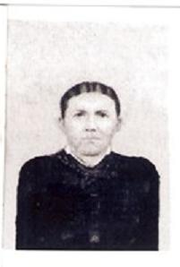

|
PERRY COUNTY
Source: Research work at the Tennessee Archives in Nashville
by the website editor accessing Perry County microfilm records.
1820 Petition
"...to leave Humphries County Line alone..."
Thomas Dowdy
Joseph Dowdy
Perry County TN Land Surveys(source: editor)
1820 Thomas Dowdy 10 acres grant #18123 Mil Warrant Book [war?]
1821 Thomas Dowdy 15 acres scc Thos Dowdy, Wm Hillburn
1822 Thomas Dowdy 10 acres Hickman Co [same as 1820 grant?]
1822 Thomas Dowdy 20 acres Perry Co
1824 James Mitchell scc William Dowdy
1838 Jordan Dowdy 269 acres Coon Creek scc Thos Dowdy adj.
Thos Dowdy
1838 Jordan Dowdy 20 acres scc Thos Dowdy
1838 Jordan Dowdy 3 acres line of Hickman and Perry adj. Thos
Dowdy
1847 Jonathan Wright Rockhouse Creek adj. Jerimiah Dowdy
1847 Jordan Dowdy 37 acres Coon Creek adj. Wm Hill
1847 Thomas Dowdy 21 acres Coon Creek adj. Bird Talley, Leonard
Evans
1847 Thomas Dowdy 25 acres Coon Creek
1847 Jordan Dowdy 20 acres Coon Creek adj James Mitchell
1847 Jordan Dowdy 100 acres Coon Creek
1847 Thomas Dowdy 100 acres
1847 Thomas Dowdy 20 acres adj. Hugh Turner (Torrance?)
1849 Thomas Dowdy and B. Tally 1435 acres adj. Thos Dowdy Jr.,
Jordan Dowdy,
A Craig, Jas. Rogers
1851 Thomas Dowdy 116 acres Coon Creek adj. Jordan Dowdy
1856 Mary Dowdy 12 acres adj. Jordan Dowdy [died in 1852?]
Perry County TN Deeds
1832 G119 Thomas Dowdy of Perry to Elida Barber "son in
law of Thomas Dowdy" land adj. Hiram Campbell. 10 acres
surveyed in 1831
1843 h260 Jordan Dowdy to Thomas Dowdy
1843 h259 Jordan Dowdy to Thomas Dowdy
1844 h2 W.H. Dowdy to Elizabeth Dowdy deed of gift "books,
sheep, hogs" etc
1849 g332 Hiram Campbell to Thomas Dowdy of Hickman "land
as heir of Joseph Dowdy decd ...and Thomas being a lawful heir
of Joseph Dowdy"
1850 h22 Simon Campbell and wife Susan to Jordan Dowdy former
wife of Joseph Dowdy sold dower land. wit: Hiram Campbell
1850 h119 Thomas Dowdy Jr. to Thomas Dowdy Sr.
1850 h122 Thomas Dowdy to Jordan Dowdy
1850 h112 Thomas Dowdy to Bannister Tally
1850 h166 Hiram Campbell to Jordan Dowdy sold heirs interest
of Joseph dowdy decd. "heirs: Calvin Barber and Nancy, Jeremiah
Dowdy and Thomas Dowdy
1850 h64 Calvin Barber and Nancy to Jerimiah Dowdy and Hriam
Campbell Mentioned 1847 deed Thomas Dowdy to Joseph Dowdy
1851 h271 Thomas Dowdy Sr to Barnabas Beasley of Williamson Co
wit: Jordan Dowdy
1851 h273 Thomas Dowdy Sr to Jordan Dowdy land next to land sold
to Beasley pg 271. This Thomas got TN grant #29003 in 1847.
1851 h261 Thomas Dowdy grant wit: Joseph Dowdy and Jordan Dowdy
[Joseph is dead?]
1852 h340 Thomas Dowdy Jr to L. Caner [Elkaner?] Lands
1852 h346 Thomas Dowdy to Jordan Dowdy
1852 h399 Jordan Dowdy to Thomas Dowdy
1852 h400 Jordan Dowdy to Thomas Dowdy
1852 i130 Jordan Dowdy heirs decd vs Thomas Dowdy 10 acres
1853 i241 Oliver French to Mary Dowdy
1853 i205 Joseph Trull to Thomas Dowdy
1854 i412 Thomas Dowdy Jr appts Thomas M. Brasher atty to sell
1435 acres granted with B. Tally except 400 ac which was sold
to Thomas Dowdy Sr in 1850. [This land was sold later for $4,140
to Cinncinati Harrison and Straight Line Railroad]
1854 i445 Thomas Dowdy and Calvin Barber appt Thomas M. Brasher
atty to sell 1720 acres granted 1854 [then sold later for $6,983
to Cinn. Harrison and Straight Line RR]
1856 Abner Smith et al to Mary Dowdy Mary Dowdy, Wm T. Dowdy,
Martha J. Dowdy, Anderson E Dowdy, Serena C. Dowdy , and Jordan
A. Dowdy miners under 20 years petition by mother and regular
guardian Mary Dowdy, and Martha Dowdy by her regular guardian
Calvin Barber and Hubbard Qualls and wife Mary vs Abner Smith
and wife Jan, Wm Campbell and wife Sarah, James Campbell and
wife Elizabeth, Bannister Tally and wife Rebecca and Wm and James
W. Dowdy who are miners under 21 years and guardian T. M. Jones
[?].
Perry County Court Records
1840 Jan Court pg 456 Guildford Dudley vs. Joseph B. Dowdy,
C.H. Lafferty , and Wm Briant...satisfy a judgement in Wayne
Co for Dudley. Deft were security for William B. Ross ....land
where Joseph B. Dowdy now lives (in Perry ?)
1841 Jan Court Minutes pg 406 "Below is a list o funsettled
accounts belonging to Abraham Peters....James Dowdy $1.44..."
Perry County Chancery Court 1854 (source: editor)
Mary Dowdy vs. Thomas Dowdy
"Joseph Dowdy departed this life in ___ intestate leaving
a widow Susan Dowdy and the following married children: Nancy
m. Calvin Barber, Sarah m. Wm Campbell, Jane m. Abner Smith,
Elizabeth m. Jas Campbell, Rebecca m. Banister Tally. Thomasd
Dowdy, Jerimiah Dowdy, William Dowdy, Martha Dowdy and James
W. Dowdy state that Joseph Dowdy possessed land. That widow Susan
intermarried with one Simeon Campbell. That dower was assigned
her by Cir. Ct. . Sold land to Jordan Dowdy who was husband of
petitioner and father of Wm T., Martha J, Anderson E. Serena
C. and Jordan A. Dowdy. ...Jordan Dowdy dies in the year 1852
with a will and since the death, she (Mary) has purchased the
interest in sd land of Hubbard Quarles and Mary Quarles and takes
title when Mary reaches 21. She (Mary) is entitled to 8/11ths
of shares of Susan and Simeon Campbell's dower land purchased.
Susan is yet quite a young and hearty woman She is mother of
only one of the aforesaid children: James W. Dowdy. and her age
will not exceed 30 years. Abner Smith and Jane, Wm Campbell and
Sarah, Jas Campbell and Elizabeth, Banister Tally and Rebecca
are not living in TN. William Dowdy and James W. Dowdy are residents
of Perry and under age of 21."
Census
1830 Perry Census
Joseph Dowdy 02200001-30101 b. 1770-1780 (note: this is an older
Joseph. He is not the Joseph Dowdy whose lineage is outlined
above)
Thomas Dowdy 0210101-012001 b. 1780-1790
1840 Perry Census
Joseph Dowdy 0102001- 212001 b.1790-1800
Thomas Dowdy not found???
1850 Perry Census
Thomas Dowdy 80 NC, Fanny (Hinson) 70 NC, Hubbard Quarles 20,
John Barber 18, Mary Dowdy 12
Jordan Dowdy 39 TN, Mary (Serena Barber) 29 TN, Wm T. 6 Martha
4, Anderson E. 3, Serena C. 2/12, Sarah McColester 55, Cooper
Edwards 15.
Bannister Tally.....,Thomas Dowdy 25, Isaac Dowdy 6
Civil War Records in Arkansas
3rd Arkansas Cavalry Regiment
Union Company "L"
Dowdy, Isaac, Pvt - enlisted 27 Jul 1864 at Lewisburg, AR. Height
5' 3", hazel eyes, brown hair, dark complexion, farmer,
age 18, born in Perry Co. TN
Dowdy, William E, Pvt - enlisted 27 Jul 1864 at Lewisburk,
AR. Height 5' 6", hazel eyes, dark hair, light complexion,
farmer, age 21, born in Perry Co. TN. Died in quarters at Lewisburg,
AR on 4 Sep 1864.
Dowdy Cemetery
contributed to GenWeb by Rembert Woodroof JANE46MARY@peoplepc.com
The Dowdy cemetery is on highway 412 in Perry County TN about
one thousand
feet east of the junction of 412 and highway 100. It on the south
side of 412.
It is on part of a land grant to Thomas Dowdy, grandfather of
Allen Jordan
Dowdy who was burried in this cemetery in 1918. He has five
sons in this
cemetery: Grover Cleveland, Benjamin Cal Roy, Ralph Truman,
Baker Lock and Tom.
1. Anna E. Dowdy 20 Aug 1889 16 Oct 1908
Grover Cleveland 29 Oct 1888 5 Feb 1912
2. B. C. R. Dowdy June 21 1881 May 2 1923
3. Irene Dowdy Aug 17 1907 Apr 10 1909
4. Odell Daughter of R T and Alice Dowdy 24 Mar 1915 27 Mar
1915
5. Infant son of R T and Alice A Dowdy 4 May 5 May 1923
6. R. T. Dowdy 19 Feb 1887 31 Oct 1938
Alice A. 31 Mar 1886 19 Mar 1925
7. Villous C. Dowdy son of Ralph Truman Dowdy Jan 6, 1914
Oct 13, 1965
8. Woodroof Rembert B Nov 13, 1917 Mar 9, 1984
Margrette D Oct 27, 1918
9. Dowdy Baker L. Apr 12, 1891 Mar 25, 1941
Ila R. Nov 30, 1892 Mar 24, 1971
10. A. J. Dowdy Oct 5, 1852 Mar 6, 1918
M. N. Dowdy June 1, 1853 Dec 27, 1919
11. Dowdy Eve 1885 1979
Tom 1883 1955
12. David Eugene Dowdy Sep 10, 1953 Apr 29, 1976
13. Dowdy Molly R. Apr 18, 1923 Sep 30, 1998
Tom July 18, 1916 Sep 15, 1983
14. Sanders Jess W. Sep 20, 1918
Evelyn Feb 19, 1918 July
9, 1995
15. Dowdy Forrest Winder Nov 18, 1919 Sep 22, 2000

Mary Jane Dowdy
Born: 1845-11-24
Coon Creek, Perry,TN
Died: 1913-03-29
Farmers Valley, Perry,TN
d/o Allen Jordan Dowdy and
Mary (Polly) Barber
Married Benjamin Kittrell 1860 Perry Co TN
(source: ancestry.com public postings)
|

 Tennessee
Tennessee